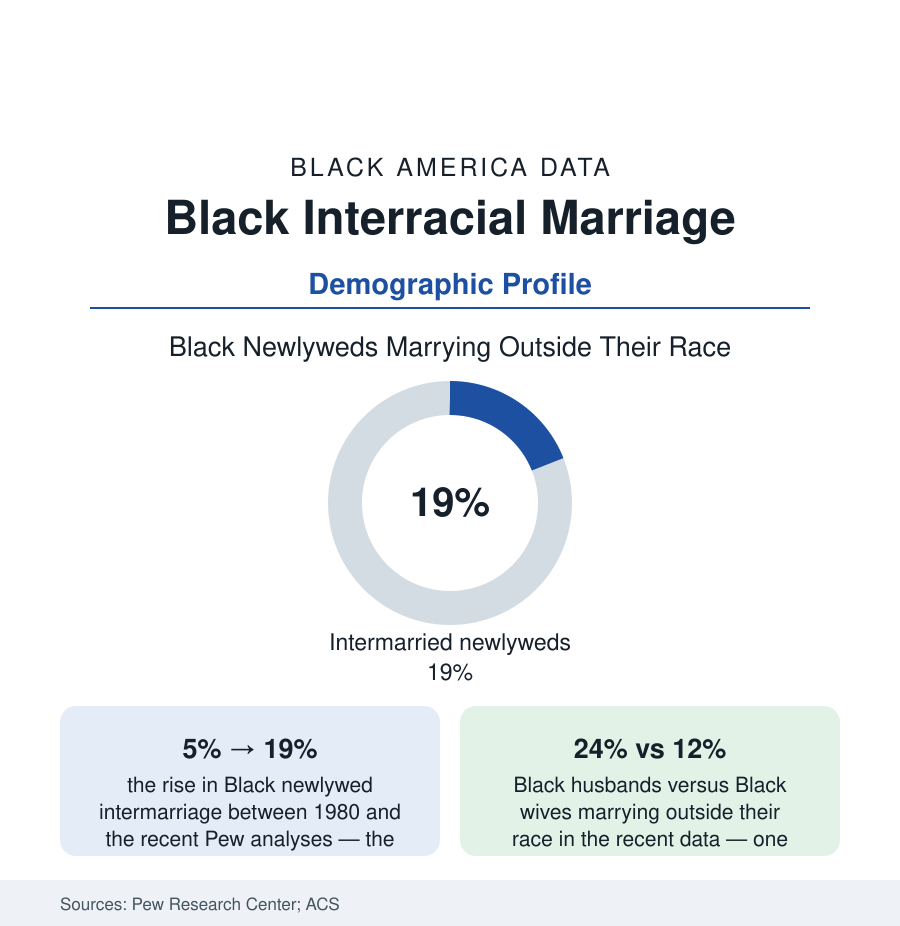

Black Census
Black Interracial Marriage: One in Five New Marriages Crosses the Line
About 19% of Black newlyweds marry someone of another race — up from 5% in 1980 — with a two-to-one gap between husbands and wives. The Pew and census record.

In 1967 the Supreme Court struck down the last state laws against interracial marriage; the demographic record since is a slow, steady revision of American family structure. Among Black newlyweds, the share marrying a spouse of another race has risen from about five percent in 1980 to about nineteen percent in the recent Pew Research Center analyses — with the married population as a whole (all cohorts combined) standing lower, around eleven percent of married Black Americans in an interracial union, as the older cohorts' patterns dilute the newlywed line. One marriage in five now crosses the line that was a felony within living memory. This article reads the data with the care the subject's numbers deserve.
The Trend and Its Shape
The Pew series (built on the census and ACS microdata) draws the curve's shape: the steepest gains in the 1980s and 1990s as the post-Loving cohorts reached marrying age, a continued climb through the 2000s, and a plateau in the high teens in the most recent years — the curve bending toward the levels of the other major groups' (Hispanic newlyweds intermarry at roughly 27%, Asian newlyweds around 29% in the same analyses, white newlyweds around 11% — the Black rate sitting between, having overtaken the white rate it once trailed). The partners' composition: Black-white pairings constitute the large majority of Black intermarriages, with Black-Hispanic and Black-Asian pairings the smaller shares the ACS spouse tables record. The geography runs as the demography predicts — intermarriage rates for Black newlyweds highest in the West and in metropolitan areas, lowest in the rural South — and the education gradient rises with attainment for Black men in the analyses (college-educated Black newlyweds intermarrying at notably higher rates) while running flatter for Black women.
The Gender Asymmetry: The File's Most Persistent Datum
No statistic in this file has been more chewed over than the two-to-one split: in the recent data about 24% of Black male newlyweds marry outside their race, against about 12% of Black female newlyweds — an asymmetry present in every decade of the series and in the population-wide counts as well. The demographic literature's contributing accounts are structural before they are cultural: the sex-ratio imbalance of the Black adult population (the family-structure file's arithmetic — mortality, and the missing-men accounting of the population data — leaves the marriage market itself numerically asymmetric), the geography and institution mix of meeting markets (the military, the universities, and the integrated workplaces where interracial couples disproportionately meet skew by sex in their Black populations), and the preference data of the dating-platform studies (whose response-rate tables record the asymmetries of the digital market with uncomfortable precision — the sociologists' documentation, not this atlas's endorsement, of patterns every party to them can recite). The consequences land in the family file: the asymmetry is one strand of the never-married rates by sex (the census article's data), and the children of the crossed line feed the fastest-growing census category in the entire volume — the multiracial population of the projections article, whose tenfold growth is substantially this section's arithmetic compounding.
Outcomes and the Household Data
The household data complicate the storylines in both directions: interracial Black-white couples' incomes sit between the Black-couple and white-couple medians in the ACS analyses (education composition explaining most of the position), their homeownership likewise; their residential patterns run more integrated than either group's average — the intermarried household as a small engine of neighborhood integration in the segregation file's tract data. The stability literature records divorce-risk differentials that vary by pairing and shrink under controls (the demographic journals' careful, inconclusive shelf); the children file records the identity-development research without a bottom line beyond the growth curve itself. And the attitude data — the frame around the whole file — show the approval revolution completed in the surveys: interracial marriage approval in the Gallup series rose from four percent in 1958 to the mid-nineties percent range in the recent polls, among the largest opinion reversals the survey era has measured, with Black respondents' approval historically the highest of any group throughout — the population that paid for the line's existence was always, in the data, the most ready to live without it.
Reading the Intermarriage Data
One in five new marriages, two-to-one by sex, compounding into the census's fastest-growing category: the intermarriage file is demography's record of a prohibition's long half-life — still legible in the numbers two generations on, and fading on schedule in every cohort table the bureau publishes. The line the law drew in blood quantum and statute is dissolving in the marriage records. The data's pace for the dissolution is generational, and the data's direction has never once reversed.
More in Black Census
The Black Population of the United States: Size, Definitions, and Distribution
The Black population of the United States totals 52.8 million — 15.4 percent of the nation. How the Census Bureau defines and counts the population, and where it lives.
Black Median Household Income in the United States
Black median household income stands at $56,490 in the Census Bureau's annual income report — how the figure is measured, how it compares, and what drives it.
The Black Poverty Rate: Levels, Children, and the Long Trend
The official Black poverty rate is 17.1 percent — against 11.1 percent nationally and 7.7 percent for non-Hispanic White Americans. How poverty is measured and what the data show.
Source: Pew Research Center analyses of Census Bureau data; U.S. Census Bureau, American Community Survey; National Center for Health Statistics marriage statistics.